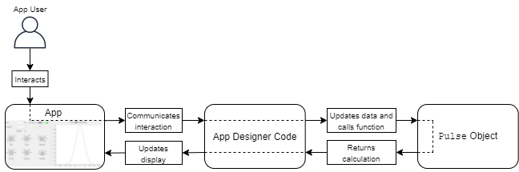
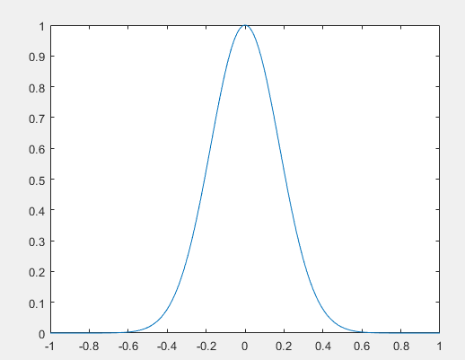

Organize App Data Using MATLAB Classes
As the size and complexity of an app increases, it can be difficult to organize and manage the code to perform calculations, process data, and manage user interactions in one file. This example shows how to take an app created entirely in App Designer and reorganize the app code into two parts:
Code that stores your app data and the algorithms to process that data, implemented as a MATLAB® class
Code that displays the app and manages user interactions, implemented as an App Designer app
Separating the data and algorithms from the app has multiple benefits.
Scalability — It is easier to extend app functionality when the code is organized into multiple self-contained portions.
Reusability — You can reuse your data and algorithms across multiple apps with minimal effort.
Testability — You can run and test your algorithms in MATLAB, independently from the app.
This example uses the PulseGenerator app, which lets users specify
options to generate a pulse and visualize the resulting waveform. The goal of the example is
to reorganize the code in the original app by performing these steps:
Create a
Pulseclass that stores pulse data, such as the type, frequency, and length of the pulse, and the algorithm used to take that pulse data and generate the resulting waveform.Modify the code in App Designer to use the
Pulseclass to perform calculations and to update the app display.
In the final app, when a user interacts with the app controls, the code in App Designer
updates the data stored in the Pulse class and calls a class method to
generate the waveform data. App Designer then updates the app display with the new waveform
visualization.

To view and run the final app, see Pulse Generator App That Stores Data in a Class.
Open App Designer App
Run this command to open a working copy of the PulseGenerator
app.
openExample('matlab/PulseGeneratorAppExample')Write a MATLAB Class to Manage App Data
Separating the data and algorithms that are independent of the app interface allows you to organize the different tasks that your code performs, and to test and reuse these tasks independently of one another. Implementing this portion of your app as a MATLAB class has these benefits:
You can manage a large amount of interdependent data using object-oriented design.
You can easily share and update this data within your App Designer app.
For more information about the benefits of object-oriented design in MATLAB, see Why Use Object-Oriented Design.
Define Class
To determine which aspects of your app to separate out as a class, consider what parts of your app code do not directly impact the app user interface, and which parts of your app you might want to test separately from the running app.
In the pulse generator app, the app data consists of the pulse that the user wants to
visualize. Create a new class file named Pulse.m in the same folder as
the PulseGenerator.mlapp app file. Define a handle class named
Pulse by creating a classdef block.
classdef Pulse < handle % ... end
Store your app data and write functions to implement your app algorithms within the
classdef block.
Create Properties
Use properties to store and share app data. To define properties, create a
properties block. Create properties for data that the app needs
access to and for data that is processed by algorithms associated with the app.
In the Pulse class, create a properties block to hold the data that
defines a pulse, such as the pulse type and the frequency and length of the pulse.
properties Type Frequency Length Edge Window Modulation LowPass HighPass Dispersion end properties (Constant) StartFrequency = 10; StopFrequency = 20; end
For more information about defining properties in a class, see Property Syntax.
Create Functions
Define functions that operate on the app data in a methods block in
the class definition.
For example, the original PulseGenerator app has a function defined
in App Designer named generatePulse that computes a pulse based on the
pulse properties. Because this algorithm does not need to update the app display or
directly respond to user interaction, you can move the function definition from App
Designer into the Pulse class.
Create a methods block and copy the
generatePulse function definition into the block. To keep the class
definition independent of the app, update the references to UI component values in the app
to instead query the values of Pulse object properties using the syntax
obj.. The beginning of your
function definition should look like this:Property
methods function result = generatePulse(obj) type = obj.Type; frequency = obj.Frequency; signalLength = obj.Length; edge = obj.Edge; window = obj.Window; modulation = obj.Modulation; lowpass = obj.LowPass; highpass = obj.HighPass; dispersion = obj.Dispersion; startFrequency = obj.StartFrequency; stopFrequency = obj.StopFrequency; t = -signalLength/2:1/frequency:signalLength/2; sig = (signalLength/(8*edge))^2; switch type % The rest of the code is the same as the original % function in the PulseGenerator app. % ... end end
To view the complete function code, see Pulse Generator App That Stores Data in a Class.
For more information about writing class methods, see Method Syntax.
Test Algorithm
One of the benefits of storing app data in a class is that you can interact with the data object and test your algorithms independently of the running app.
For example, create a Pulse object and set its properties in the
Command Window.
p = Pulse;
p.Type = 'gaussian';
p.Frequency = 500;
p.Length = 2;
p.Edge = 1;
p.Window = 0;
p.Modulation = 0;
p.LowPass = 0.4;
p.HighPass = 0;
p.Dispersion = 0;Call the generatePulse method of the Pulse object
p. Visualize the pulse in a plot.
step = 1/p.Frequency; xlim = p.Length/2; x = -xlim:step:xlim; y = generatePulse(p); plot(x,y);

You can also test your algorithm using a testing framework. For more information, see Ways to Write Unit Tests.
Share Data with App
To access the data object from within App Designer, create an instance of the class in your App Designer code and store it in a property of your app. You can set and query the object properties that store the data and call the class functions to process the data in response to user interactions.
In the PulseGenerator app in App Designer, create a new private
property by clicking the Property button  in the Editor tab. Add a private
property named
in the Editor tab. Add a private
property named PulseObject to hold the Pulse
object.
Then, in the StartupFcn for the app, create a
Pulse object by adding this code to the top of the function
definition.
app.PulseObject = Pulse;
To generate the pulse for visualization when a user interacts with one of the controls
in the app, modify the updatePlot function. This function is called in
multiple callback functions of the PulseGenerator app, whenever the user
interacts with one of the controls in the app.
In the updatePlot function, first set the properties of the
app.Pulse object using the values of the app controls by adding this
code to the top of the function.
app.PulseObject.Type = app.TypeDropDown.Value; app.PulseObject.Frequency = app.FrequencyEditField.Value; app.PulseObject.Length = app.SignalLengthsEditField.Value; app.PulseObject.Edge = app.EdgeKnob.Value; app.PulseObject.Window = app.WindowKnob.Value; app.PulseObject.Modulation = str2double(app.ModulationKnob.Value); app.PulseObject.LowPass = app.LowPassKnob.Value; app.PulseObject.HighPass = app.HighPassKnob.Value; app.PulseObject.Dispersion = str2double(app.DispersionKnob.Value);
Then, update the call to the generatePulse function by replacing the
input argument with app.PulseObject.
p = generatePulse(app.PulseObject);
Finally, ensure that the app calls the newly defined generatePulse
function in the Pulse class by deleting the
generatePulse function that is defined in App Designer.
To view the complete app code, see Pulse Generator App That Stores Data in a Class.
Pulse Generator App That Stores Data in a Class
This example shows the final PulseGenerator app, with the app data and algorithms implemented separately in the Pulse class. Run the example by clicking the Run button in App Designer.